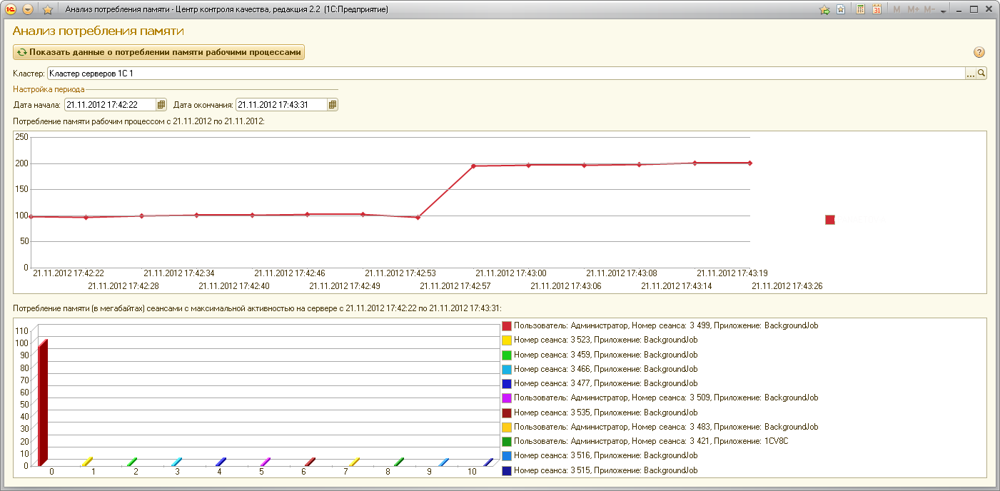

Потребление памяти рабочим процессом кластера превысило допустимое значение.
Рекомендуется воспользоваться инструментом "Анализ и устранение проблем потребления памяти", ссылку на который можно найти на панели справа. С помощью данного инструмента можно посмотреть динамику изменения размера потребляемой памяти рабочими процессами исследуемого кластера серверов.
В верхней части окошка предлагается указать исследуемый кластер серверов и интересуемый временной отрезок.
После нажатия на кнопку "Показать данные о потреблении памяти рабочими процессами" на диаграммах под контрольной панелью будут выведены данные о динамике потребления.
На верхней диаграмме выводится временная развёртка потребления памяти на каждом из рабочих серверов, входящих в кластер.
На нижней диаграмме список сеансов, дейтельность которых могла привести к неконтролируемого росту потребления памяти рабочими процессами.
